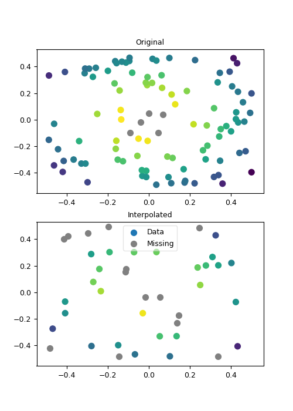

1.3.3.6.3.2.6. Interpolation entre des positions aléatoires¶
Cette routine est particulièrement adaptée à l’interpolations entre des grilles non structurées.
Voir : xy2xy().

Interpolation de données entre des positions aléatoires.
# Donnees d'entree
import numpy as N
ni=100
xi = N.random.random(ni)-.5
yi = N.random.random(ni)-.5
zi = N.exp(-(xi**2+yi**2))#+N.random.random(ni)/10.
zi = N.ma.asarray(zi)
zi[(N.abs(yi)<.1)&(N.abs(xi)<.1)] = N.ma.masked
# Donnees de sortie
no = 40
xo = N.random.random(no)-.5
yo = N.random.random(no)-.5
# Regrillage
from vacumm.misc.grid.regridding import xy2xy
zo = xy2xy(xi, yi, zi, xo, yo)
# Plots
import pylab as P
from vacumm.misc.plot import savefigs
P.figure(figsize=(5, 7))
P.subplot(211)
P.title('Original')
P.scatter(xi, yi, c=zi, s=50, vmin=zi.min(), vmax=zi.max())
P.scatter(xi[zi.mask], yi[zi.mask], s=50, c='.5')
axlims = P.axis()
P.subplot(212)
P.title('Interpolated')
P.scatter(xo, yo, c=zo, s=50, vmin=zi.min(), vmax=zi.max(), label='Data')
P.scatter(xo[zo.mask], yo[zo.mask], s=50, c='.5', label='Missing')
P.legend().legendPatch.set_alpha(.5)
P.axis(axlims)
savefigs(__file__, pdf=True)
P.close()